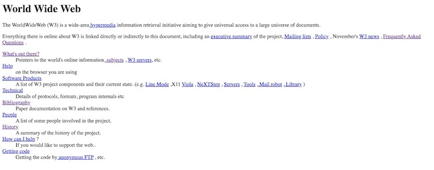
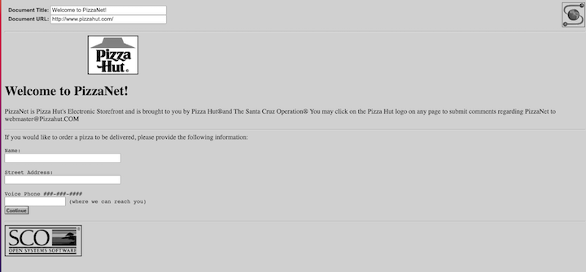

The Rise of the Internet
"(What) internet hucksters won't tell you is that the internet is one big ocean of unedited data, without any pretense of completeness. Lacking editors, reviewers or critics, the Internet has become a wasteland of unfiltered data. You don't know what to ignore and what's worth reading." — Clifford Stoll for Newsweek 2/26/1995
1980 - 1990 - Tim Berners Lee and the Early Internet
The World Wide Web began at CERN, the European Laboratory for Particle Physics in Geneva, Switzerland. Tim came up with an idea to collaborate with institutions from all over the world. He had an idea to organize and pool together imformation, by creating a document in which you could link to the files themselves, this was called hypertext. His first hypertext system he named 'Enquire'. The prototype web browser came out 10 years later for the NeXT computer. [1]
First Web Brower - World Wide Web
The World Wide Web didn't come out of a vacuum. In 1982 the Internet Protocol Suite (TCP/IP) was standardized, which allowed for worldwide proliferation of networks. By 1995 A Domain Name System (DNS) was established which allowed for assigning Internet Protocol addresses to domain names. In 1986 the National Science Foundation Network (NSFNet) provided access to supercomputer sites to download and relay information (speeds as high as 56 kbit/s!). Internet service providers emerged in 1989, and Tim Berners Lee was working on his web creation during this time. [2]
1990 - 1995 - HTML and the HTTP
The Hypertext Transfer Protocol (HTTP) was a protocol written by Tim as a means of fetching and displaying Hypertext Markup language (HTML). It functions as a request-response protocol in the client-server model. The request in most cases is a GET request, which is in a format defined by the Request For Comment (RFC) 9110.
Request
Request URL: https://alug.us/
Request Method: GET
Remote Address: 23.119.21.132:443
User-Agent: Mozilla/5.0 (Macintosh; Intel Mac OS X 10_15_7) AppleWebKit/537.36 (KHTML, like Gecko)
Chrome/114.0.0.0 Safari/537.36
Accept:
text/html,application/xhtml+xml,application/xml;q=0.9,image/avif,image/webp,image/apng,*/*;q=0.8,application/signed-exchange;v=b3;q=0.7
Accept-Encoding: gzip, deflate, br
Accept-Language: en-US,en;q=0.9
Response
Accept-Ranges: bytes
Content-Length: 3751
Content-Type: text/html
Status Code: 200
Date: Wed, 28 Jun 2023 01:43:06 GMT
Etag: "6453fd93-ea7"
Last-Modified: Thu, 04 May 2023 18:46:43 GMT
Server: nginx/1.22.1
The first written HTML was based off of Standard Generalized Markup Language (SGML) [3] and contained many of the basic tags used in HTML documents. There was no formal HTML definition until 1995 when the HTML 2.0 specification was formalized by Tim Berners-Lee and Daniel W. Connolly.
RFC-1866The HTML 2.0 Document Type Definition (DTD)
The HTML 2.0 Specification
I was surprised to find that HTML 2.0 has quite a lot of functionality and tags that are still commonly used all the time in the modern web. This whole page is written using HTML 2.0 Tags!
Here's Some Old Pages in all their Glory before 1995
1991
1994
1994